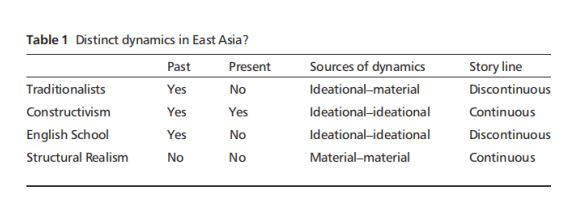

收录于合集

简 介
【原题】 East Asia and International Relations Theory
【 作者简介】Masaru Kohno, 日本早稻田大学教授。
** 【 文章来源 】International Relations of the Asia-Pacific, Volume 14 | Issue 1 | 2014, Pages 179–190. Review Essay**

** 【 期刊介绍 】International Relations of Asia- Pacific，成立于2001年，由牛津大学出版社代表日本国际关系协会出版，每年1月、5月和9月出版三次。该期刊的关注点是亚太地区的国际政治动态，包括中国政治，美国在亚太地区的地位，地区治理，日本对外关系，亚洲与国际关系理论，中国的全球化道路以及中国的国家认同。2014年其影响因子为0.758，2018年上升至0.906。 **
【 期刊网址】
** https://academic.oup.com/irap**
【 编译】李源
【 审核】杨艺华 褚峰熠
** 【 目录】**
-
引言
-
四种视角
-
争论评价
-
东亚与“体系—单位”问题
-
结论
核 心 观 点
作者介绍了当今东亚与国际关系理论研究的四种视角：传统主义、建构主义、英国学派以及结构现实主义，认为无论是王元康的结构现实主义视角，还是康灿雄的建构主义视角，都忽视了一个本体论上的前提问题：（东亚的）体系与单位是否是分离的？
四种视角
建构主义视角将东亚历史上的长期稳定归结于地区社会的等级制结构与儒家文化的观念力量，其中，康灿雄强调即使当今中国再一次崛起成为一个大国，它的崛起也不会破坏地区稳定，它的邻国不会选择制衡中国，而会接纳中国的崛起，这不同于传统主流国际关系理论的行为模式。康灿雄从建构主义的视角予以解释，强调身份的重要性。作者认为在一个重要问题上，传统主义与康灿雄的观点存在差异。早期关于东亚的经典著作以东亚历史的间断为前提，强调近代与西方的接触已经使得东亚国际关系的组织原则发生了不可逆转的改变。而康灿雄则认为这个地区维持其前现代秩序的任何机制，都没有完全被消灭。在前现代社会，东亚有着不同的世界秩序，即使近代被西方的普遍主义所打断，但它今天仍具有其传统的特征。因此，康灿雄的观点是以历史的连续性为前提的。
而在Shogo Suzuki的《文明与帝国》一书中，他则基于英国学派的理论，说明东亚尤其是中国与日本是如何在19世纪末融入欧洲国际社会的。和传统主义一样，他也强调东亚历史的间断性。但传统主义者认为近代融入西方社会是由西方的物质优势所导致的，而他则认为与“文明标准”这一概念相关的观念因素是导致中日融入西方世界的关键因素。
最后，作者评论了王元康的结构现实主义观点。基于主流的结构现实主义国际关系理论，王元康否认东亚国际关系的特殊内涵。他选择了大量宋朝与明朝时期中国对外关系的案例，发现即使在儒家文化最巅峰的两个朝代，它也没有限制统治者使用武力，统治者的主要动机仍是来自于他们对中国与其对手之间力量平衡的评估，中国对外关系也始终奉行现实主义原则。因此，中国的对外行为没有什么独特的或文化的因素，东亚的国际结构也是无政府的，而非等级制的。这对强调儒家观念力量的建构主义提出了有力的挑战。同时，作者认为王元康基于结构现实主义的实证案例研究比康灿雄的建构主义观点更具信服力。因为康灿雄的论据更多为二次引用，甚至存在一些基本历史的错误。而王元康则利用了大量原始的资料，有着严格的案例选取标准与对假设的实证检验。

东亚与“体系—单位”问题 ****
结构现实主义将国际体系描述为无政府状态，王元康相信这也同样适用于东亚，而康灿雄的建构主义视角则视东亚的国际体系为等级制状态。作者指出：无论是无政府状态还是等级制，都是用来描述“体系”的概念，而没有涉及“单位”。因此，他们的著作中暗含一个潜在的前提：（东亚）体系与它所包含的个体单位是分离的。但体系与单位相分离的本体论是否成立？作者认为这是分析东亚国际关系必须解决的关键问题，但却被当前的争论所忽视。作者提出了两个简单的案例予以说明：
案例一： 13世纪末，蒙古帝国对日本发动军事行动，日本成功抵制住了进攻。在此之前，日本并不是一个统一的国家，而蒙古的进攻遏制了日本国内分裂的局面，并对日本施加了统一的压力，虽然只是短暂的。
案例二： 14世纪末，日本九州岛地区被一个区域的自治政权所控制，幕府多次派遣军队，但都已失败告终。在双方的僵局中，济州岛的自治政权决定与明朝建立朝贡关系，中国皇帝接受了这一提议并册封其首领为日本国王，使其加强了对九州地区的控制。
这两个案例表明至少在那几年，日本是同时作为一个“体系”和“个体单位”而存在的。作为一个个体单位，日本与其他行为体发生互动，包括军事冲突与缔结贸易协定；作为一个体系，日本国内存在着大量的自治实体，他们相互争夺领土与试图建立霸权。对其个体单位施加的统一压力越大（越小）时，日本本身更少（更多）得表现为一个体系。日本能在多大程度上被视为一个体系，而在多大程度上可以被视为一个独立的单元？（中国也是如此，编者注）换句话说，体系与单元是否可以被清晰地划分出来？而这一问题在当今的争论中却并没被予以足够的讨论和重视。例如，康灿雄视中国为一个独立的个体单位，而不是一个体系，这导致他将大量的冲突视为国内矛盾，从而忽视了它们。
结论
在东亚，区分单位的原则是不断变化的。日本、中国和该地区的其他国家发生互动，不仅仅是作为从属于共同国际体系的个体单位，而且每一个也都作为一个体系而存在，其内部存在相互竞争的自治单位。区别于欧洲，这样一个复杂和动态的模式是东亚国际关系的关键特征。然而，目前关于东亚国际关系的争论中并没有对此予以重视。
评论书籍：
-
David Kang, (2007) China Rising: Peace, Power, and Order in East Asia, New York: Columbia University Press.
-
David Kang, (2010) East Asia before the West: Five Centuries of Trade and Tribute, New York: Columbia University Press.
-
Shogo Suzuki, (2011) Civilization and Empire: China and Japan’s Encounter with European International Society, London: Routledge.
-
Wang Yuan-kang, (2011) Harmony and War: Confucian Culture and Chinese Power Politics, New York: Columbia University Press.
点击左下角“ 阅读原文 ”获取原文pdf版
**
**
声明
此文为国政学人微信公众平台外文编译系列文章之一，由国政学人编辑首发，不代表本平台观点。欢迎转发分享，转载请务必注明来源。如有问题，请联系guozhengxueren@163.com
更多阅读
国政学人 （ID：guozhengxueren)
为方便学人及时阅读高质量文章
别忘把国政学人设置 星标 哦~